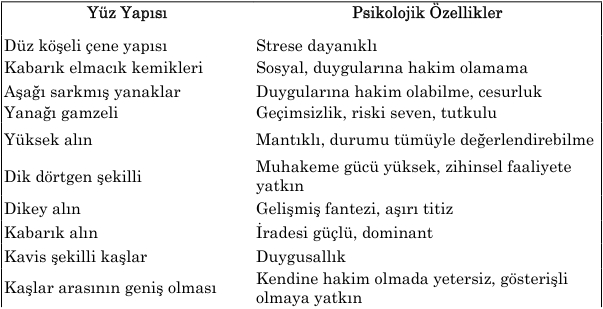

Ara ş t ı rma Serisi No.13
¯¯¯¯¯¯¯¯¯¯¯¯¯¯¯¯¯¯¯¯¯¯¯¯¯¯¯¯¯¯¯¯¯¯
27
Yüz Okuma Sanat ı
¯¯¯¯¯¯¯¯¯¯¯¯¯¯¯¯¯¯¯¯¯¯¯¯¯¯¯¯¯¯¯¯¯¯
5. BÖLÜM
YÜZ Ç İ ZG İ LER İ İ Ç İ N DE ĞİŞİ K B İ R S İ STEM
Fizyognomi uzmanlar ı na göre, ba ş ı n belli k ı s ı mlar ı aras ı ndaki orant ı ya göre, insan ı n karakter özelliklerini tespit etmek mümkündür. Bu konuda en bariz ili ş ki çene ve yüz aras ı ndaki orant ı d ı r. Çenesi ve yüzü büyük olan ki ş ilerde zeka yetene ğ i geli ş mi ş düzeydedir. Küçük çene ve büyük yüz prati ğ e yatk ı n karakterli insanlara özgüdür.
Yüz biçiminin uzunlu ğ u enine oranla daha fazla olan ki ş iler, canl ı ve etkileyici yap ı ya sahip ve teoriye merakl ı d ı rlar. Enli yüzler ise say ı sal bilimlere meyilli olman ı n bir belirtisidir. Bu tip yüzlerde ayr ı ca, çene k ı sm ı n ı n eni al ı n k ı sm ı n ı n pratik zekan ı n üst düzeyde geli ş ti ğ inin bir göstergesidir. Bu tür yüz yap ı s ı na sahip ki ş iler görevlerini zaman ı nda ve eksiksiz yerine getiriyor, onlar aras ı ndan vicdanl ı ve adaletli i ş çiler ç ı k ı yor. Fakat, bu tipler iyi yönetici ve organizatör de ğ ildirler. Fizyognomi uzmanlar ı na göre, yüzün uzunlu ğ u burnun uzunlu ğ unun üç kat ı na e ş it olarsa, yüz avucun enine e ş it olmal ı d ı r. Bu tür yüz yap ı s ı dengeli insanlara özgüdür.
Yüzün üç bölgesinden her birisi bir ya ş amsal boyutu yans ı tmaktad ı r. Üst k ı s ı m insan ı n dü ş ünme ve zeka faaliyetini, entelektüel yetene ğ ini; orta bölge insani duygular ı n ı ; a ş a ğ ı bölge ise maddi dünyas ı n ı yans ı tmaktad ı r. O yüzden, belli bir ki ş inin yüz bölgeleri aras ı ndaki orant ı ya dikkat yetirmek gerekmektedir. Bu, ki ş inin geli ş me düzeyine ili ş kin fikir yürütmeye olanak sa ğ layacakt ı r.
Günümüzde fizyognomi uzmanlar ı yüz okumada daha fazla özellikleri dikkate almaktad ı rlar. A ş a ğ ı daki tabloda ünlü bilim adamlar ı V. I. Kulikov ve S.B. Ovde'nin yüz okumayla ilgili ara ş t ı rmalar ı n ı n sonuçlar ı verilmi ş tir.

__________________________________________________________________
© WWW.MAXIMUMBILGI.COM